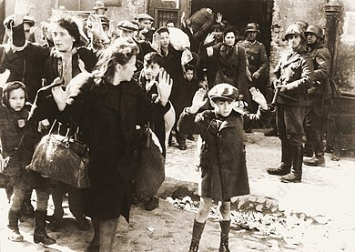
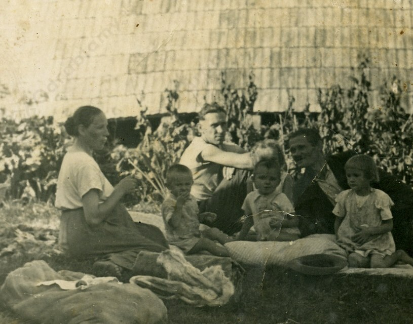

Etapy pogarszania się sytuacji Żydów w Europie okupowanej przez Niemców:
już po wybuchu II wojny światowej Niemcy dopuszczali się licznych mordów na Żydach żyjących w Polsce, niszczyli synagogi i rozkradali ich mienie,
od samego początku Niemcy prowadzili politykę prześladowania i wyniszczania ludności żydowskiej, polegała ona na dyskryminacji, stygmatyzacji, izolacji i zagładzie,
systematycznie wprowadzano kolejne ograniczenia i represje, np. Żydów zaczął obowiązywać przymus pracy, nakaz schodzenia z chodnika przed umundurowanymi Niemcami, brak możliwości korzystania z kawiarni, restauracji czy poruszania się środkami komunikacji publicznej,
organizowano przesiedlenia miejscowej ludności żydowskiej,
tworzono getta, które odseparowywały Żydów od reszty społeczeństwa, ułatwiały wyłapywanie do przymusowej pracy i ułatwiały realizację innych zarządzeń,
masowe mordy rozpoczęły się już w połowie 1941 r.,
ważnym momentem była konferencja w Wannsee (styczeń 1942 r.), podczas której Reinhard Heydrich poinformował o "ostatecznym rozwiązaniu kwestii żydowskiej" w Europie,
Niemcy celowo podsycali antysemityzm - w atakach i mordach na Żydów brały oddziału Einsatzgruppen, ale także przedstawiciele ludności lokalnej,
stworzenie sieci obozów zagłady (np. w Chełmnie nad Nerem, Bełżcu, Treblince, Sobiborze) oraz obozów koncentracyjnych,
Holocaust - ludobójstwo około 6 milionów europejskich Żydów dokonane w czasie II wojny światowej przez III Rzeszę Niemiecką i wspierane w różnym stopniu przez uzależnione od niej państwa sojusznicze.

Żydzi pojmani przez SS w trakcie powstania w getcie warszawskim, źródło zdjęcia: Wikimedia Commons.
Wpływ Holocaustu na postawy ludności terenów okupowanych przez Niemcy:
wspieranie działalności faszystowskich Niemiec, np. aparat państwowy Francji Vichy z policją oraz lokalnymi organizacjami wspierały III Rzeszą w deportacjach Żydów do obozów zagłady i obozów koncentracyjnych lub szmalcownicy,
jawne wyrażanie dezaprobaty wobec prześladowań Żydów:
- organizowanie pomocy w ucieczce (np. z Danii do Szwecji),
- wspieranie mentalne / psychiczne Żydów (np. król duński Chrystian X w akcie protestu ubrał opaskę (podobną do tych, którą nosili Żydzi), tłumacząc otoczeniu, iż wszyscy Duńczycy są sobie równi i nikt nie będzie szykanowany z powodów etnicznych lub religijnych),
- ratowanie Żydów przez organizacje, np. działalność Rady Pomocy Żydów "Żegota" oraz osoby prywatne, np. Irena Sendlerowa, Józef i Wiktoria Ulmowie,
- udzielanie pomocy przez Kościół katolicki, np. ukrywanie żydowskich dzieci przez klasztory i wydawanie im katolickich aktów chrztu,
- informowanie opinii międzynarodowej o zbrodniach III Rzeszy na Żydach, np. dostarczanie informacji przez Witolda Pileckiego i Jana Karskiego.

Józef i Wiktoria Ulmowie z dziećmi, źródło zdjęcia: www.muzeumulmow.pl
Sytuacja osób gotowych ratować Żydów w Europie Zachodniej
Sytuacja osób gotowych ratować Żydów w krajach Europy Wschodniej
za pomoc Żydom nie groziła kara śmierci,
udzielanie pomocy przez protestantów (zwłaszcza we Francji),
najlżejszą karą za pomoc Żydom był mandat, najcięższą wysyłka do obozu koncentracyjnego.
za pomoc Żydom groziła kara śmierci,
często stosowano odpowiedzialność zbiorą i ginęli wszyscy członkowie rodzin udzielających pomocy (np. z rąk żandarmów zginęli wszyscy członkowie rodziny: Józef Ulma, jego żona Wiktoria będąca w zaawansowanej ciąży oraz ich sześcioro dzieci),
pomocy udzielały organizacje, osoby prywatne i Kościół katolicki,